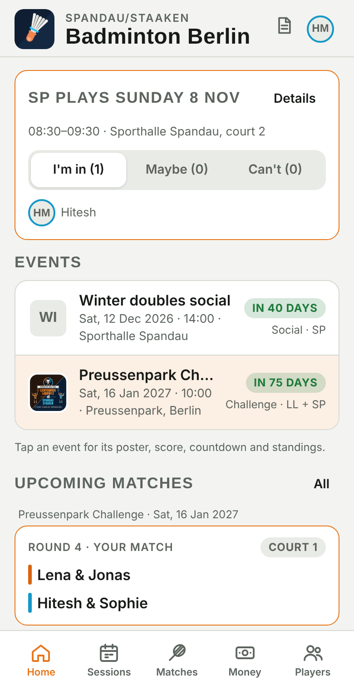
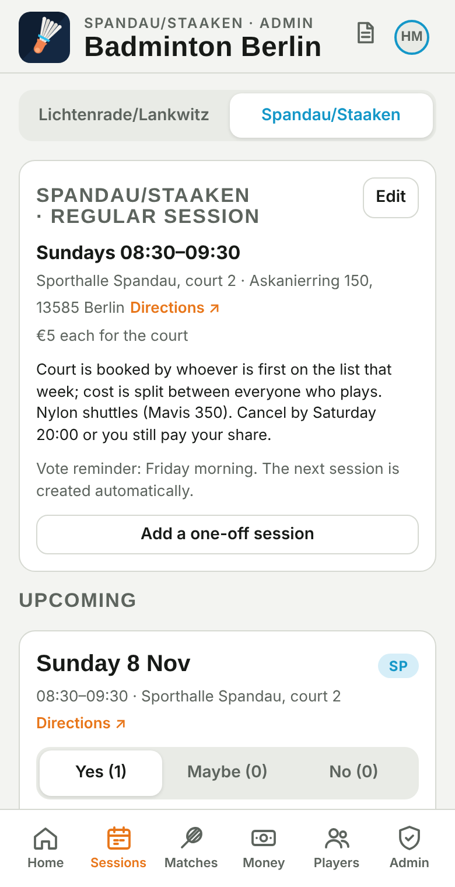
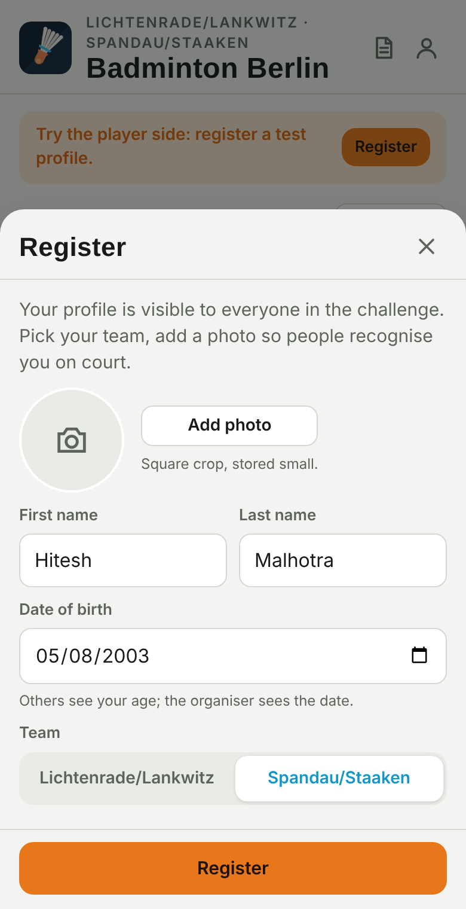
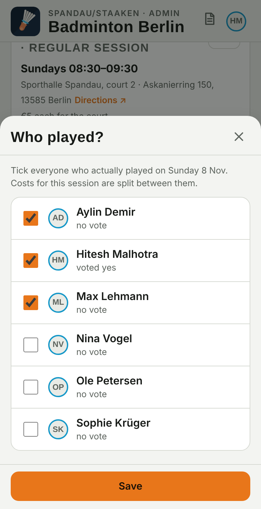
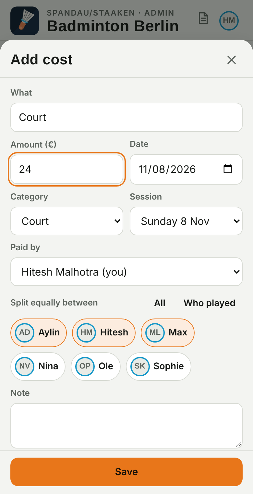
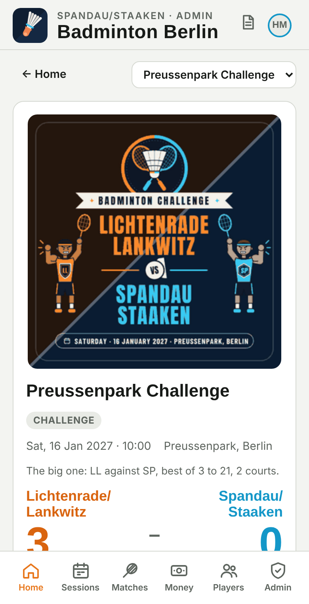
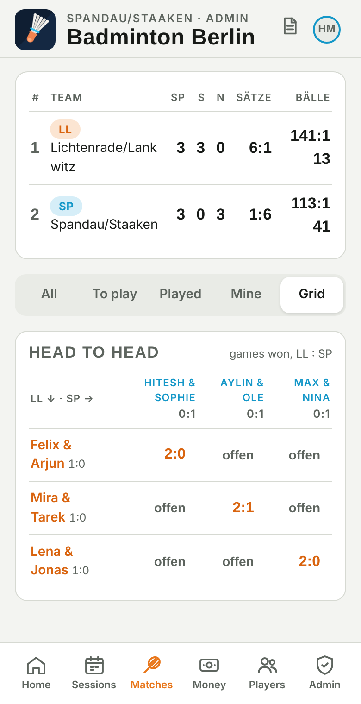
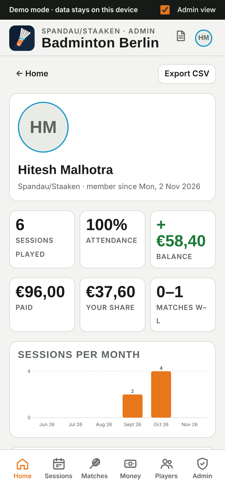
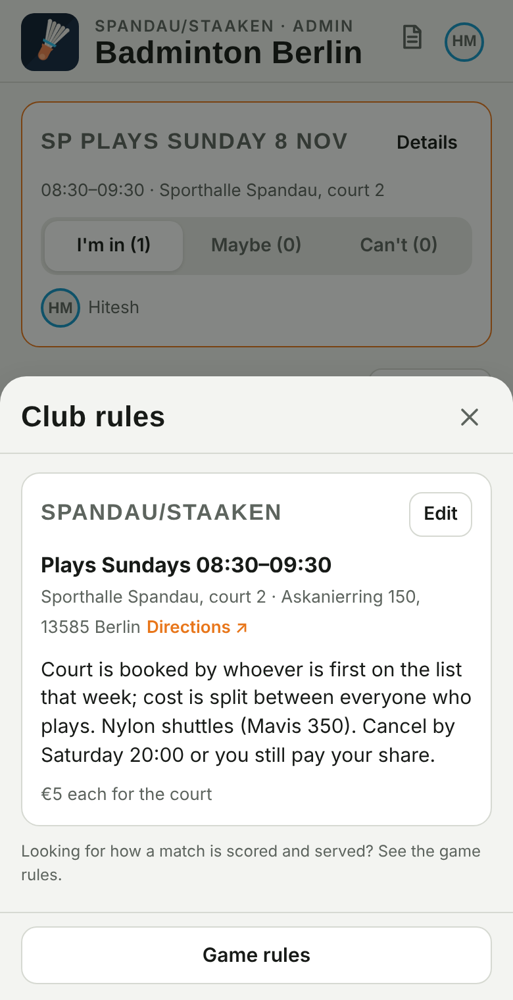

Your club, your sessions, your matches — on your phone
How to install the app, register, vote for the weekly session, see who plays whom, enter scores, and keep the court money fair.
Lichtenrade/Lankwitz · Spandau/Staaken App: hiteshmalhotra2583.github.io/badminton-challenge Version November 2026
What the app does
One link for both clubs. You register once with your name, date of birth and a photo, choose your club, and from then on the app shows you only what belongs to your club: the weekly session with a "who's coming?" vote, the court costs split between the people who played, the events your club takes part in (like the Preussenpark Challenge), the match schedule and live scores, player statistics and the rules.

Home: your next session with the vote, the events, your upcoming matches, your money position and your club card.

Sessions: the regular slot with address and directions, the next session with Yes / Maybe / No and who's in.
1. Install it like an app
It is a web app, so there is nothing to download from a store. Open the link once in your browser, then add it to your home screen — it gets its own icon, opens full screen and loads instantly. Updates arrive automatically.
iPhone / iPad — open the link in Safari (not Chrome). Tap the Share button (square with an arrow), scroll down, tap Add to Home Screen, then Add.
Android — open the link in Chrome. Tap the Install banner, or the ⋮ menu → Install app (older phones: Add to Home screen).
Open the app from the new icon and register (next section). Always use the same phone: your profile is tied to the device you register on.
Tip: on iPhone, notifications only work when the app is opened from the home-screen icon, not from Safari.
2. Register

Tap Register (Home banner or the person icon top right).
Add a photo — take one or choose from your gallery; it is cropped square and kept small so people recognise you on court.
First name, last name, date of birth. Others only see your age; the organiser sees the date.
Pick your club: Lichtenrade/Lankwitz or Spandau/Staaken. If you came through an invite link the club is already set.
Tap Register. You can edit your profile any time via the person icon.
If registration is set to "invite only", you need an invite link or code from your club's organiser. Open the link (or tap Register and type the code) and the rest is the same.
3. The weekly session: vote, play, pay
Each club has a regular slot (for example Sundays 08:30–09:30). The app creates the next session automatically and, on the club's vote day, sends a push notification: "Who's playing Sunday?"
Vote — on Home or in Sessions tap I'm in, Maybe or Can't. Everyone sees who is coming, so the court can be booked for the right number.
Find the hall — tap Directions ↗ on the session to open it in Maps.
Who played — after the session anyone can tick who actually played; this list is what the costs are split between.
Add the cost — whoever paid the court (or shuttles) taps Add cost, enters the amount and who shares it (defaults to who played). The app keeps a running balance per person, exactly like Splitwise.
Settle up — Money → "your club sessions" shows who owes whom and suggests the fewest payments. Tap Pay: it opens PayPal with the amount filled in, or shows the IBAN with a copy button and a QR code for your banking app. Then Mark as paid so the balance clears.
Get paid back easily — Edit profile → Payment details: add your PayPal.me name and/or IBAN once. Team-mates who owe you then pay in one tap.
Some clubs charge a monthly fee instead of splitting each court. Then Money shows your fee, how many months are due and a Pay button to the club's treasurer; court costs are paid from the club pot.

Tick who played.

Add the court cost; choose who shares it.Balances and settle-up suggestions.
Deadline: your club may close votes at a set time (for example Saturday 14:00 for a Sunday session). After that only your club admin can enter or change a vote for you. The in-app guide (? icon in the header) explains every screen.
Reminders: Sessions → Reminders → Enable notifications once per phone. You then get the vote reminder on your club's vote day.
4. Events, matches and scores
Home lists the events your club takes part in. Tap one to see its poster, the score between the clubs, the countdown, the format and the standings. The organiser builds the pairs and the schedule; you'll find your matches under Matches (yours are outlined and come first under "Upcoming matches" on Home).

Event screen with poster, club score and countdown.Schedule by round and court; finished matches show the game scores.

Head-to-head grid: every pair against every pair.
Entering a score
By default the organiser (or a scorer per court) enters results. If players are allowed to enter scores, tap your match, enter each game (e.g. 21:15, 18:21, 21:19) with the − / + buttons, and tap Save score. The app knows the rules: a game ends at 21 with a two-point lead (or at 30), the match at two games. Standings, the player table (Players → Stats: matches, wins, win rate, games ±, points ±) and the grid update for everyone instantly.
5. Your history

Tap your photo (top right) → My history, or the "My history" button on Home. You get your sessions played, attendance rate, what you paid, your share and your balance, charts per month, the list of every session you played with your share of the cost, and all your matches across events with the result. Export CSV downloads your session list.
Attendance is counted from whichever came first: the day you joined or your first session. Statement (PDF) opens a printable statement (sessions, costs, payments, matches) — use Print → Save as PDF. When the organiser closes a season, the page shows the new season by default; switch to "All time" or open a past season.
6. Rules
Club rules — the document icon in the header: your club's slot, address and the house rules written by your club (who books, court fee, shuttles, cancellation deadline).
Game rules — from the club rules page or the event screen: format, tie-breaks, rally-point scoring, serving in doubles (even = right, odd = left), faults, lets and fair play.

Good to know
You only see your own club's sessions, costs and events. Both clubs see each other's players for the challenge.
Your balance on Home is split in two: club sessions and the challenge day.
Guests invited for one session only see that session; club guests see everything a member sees but can't change the club setup.
New phone? Link your Google account once (your profile → Link Google account). On the new phone open the app and tap Restore on the Home banner: profile, history and balance come back. Without a link, ask your club admin to deactivate the old profile and register again.
On iPhone, the home-screen app has its own storage: register and link Google in Safari first, then tap Restore inside the home-screen app (or register directly from the home-screen app).
If your club admin sets you inactive, you keep access to your own costs and balance but no longer see the club's activity until you're reactivated.
Problems? Pull down to refresh, or close and reopen the app — it updates itself.